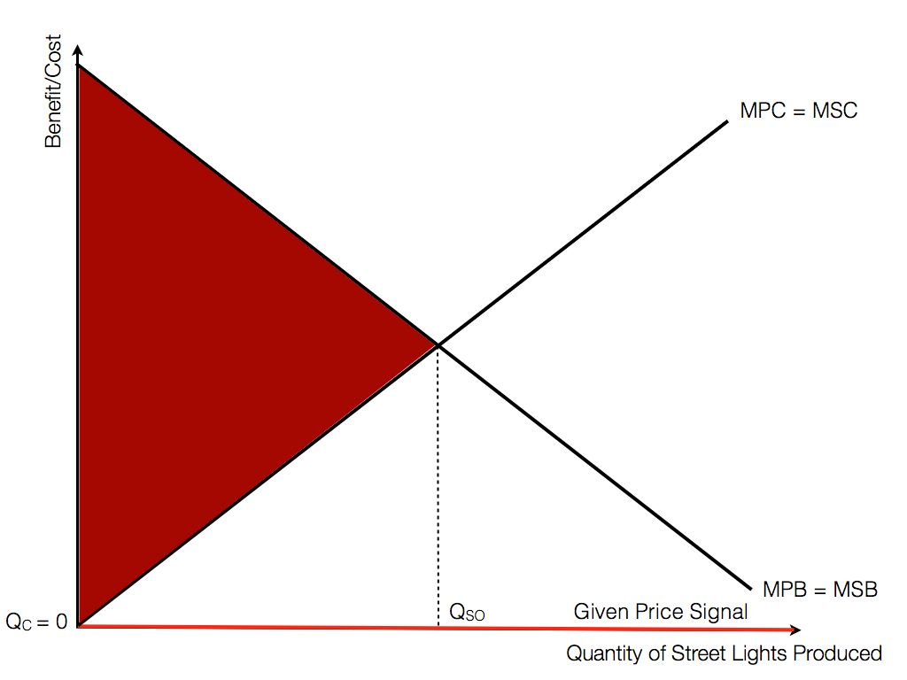

Preface
Preface
Part 1: Microeconomics
Scarcity, Opportunity Cost and Economic Efficiencies
Scarcity means that society has limited resources and unlimited wants
Resource Allocation in Competitive Markets
Firms and How They Operate
Market Failure
What is Market Failure?
Market Failure is defined as the following:
Market Failure is the failure of the free market to allocate resources in a fashion that maximises societal welfare.
This is the justification for government intervention. The very fact that the free market is failing to maximise societal welfare means that the government has to step in and take measures, which will be explored later, to correct the market failure.
Causes of Market Failure
Market failure occurs because of various reasons, all of which fall under these broad-based categories:
- Public Goods
- Positive and Negative Externalities
- Merit and Demerit Goods
- Imperfect Information
- Immobility of Factors
- Inequity of income and wealth
- Market Dominance
Note: "Inequality" is a mathematical concept (\(\geq\) and what not), while "inequity" is the social/moral concept, and the latter is what economics in this context wants
Public Goods
There are two defining characteristics of a public good: non-rivalrous and non-excludable.
Non-rivalrous
A good is non-rivalrous when an individual consumer does not reduce the quantity of the good available to other consumers. That is, the marginal cost of providing the good to one more consumer is 0. In mathematical terms \(MC=0\).
Make a mental note that this MC is not the marginal cost of producing the good, but the marginal cost of consuming the good.
Examples of non-rivalrous goods are: radio signals, light from street lamps etc.
Non-excludable
Non-excludable goods are either impossible or prohibitively costly to exlucde non-payers from consuming the good. That is, the goods are excludable NOT by choice. For example, a library can easily be made excludable by prohibiting people from entering, so a library is not a public good.
How Public Goods Lead to Market Failure
The combination of non-rivalry and non-excludability leads to what is famously known as the free rider problem. Since it is impossible to exclude someone from consuming a good, rational consumers will choose to free ride from someone who possesses the good. Because the good is not "used up" upon free-riding, the ability to free ride the good can persist in the long run.
This results in all consumers unwilling to pay for the good. i.e.
\[P=MC=0\]
Prices can be seen as the value the consumer places on the good in question, but the price signal sent by consumers would then be zero in the case of public goods. The price signal does not reflect the value the consumers place on the good (which is a positive price), and this incorrect signal results in the failure of the price mechanism.
This is illustrated in the graph below: 
The price signal transmitted is the orange line, while the actual value the consumers place on the good is given by the MSB/MPB curve. Assuming no externalities, social optimum quantity is where the MSC and MSB curves intersect. As we can see the quantity consumed is now 0, an underconsumption. For each additional unit from 0 till \(Q_{SO}\), the marginal benefits of consuming the good outweigh the marginal costs. There is thus a deadweight-loss due to underconsumption, given by the red shaded area.
Policies
Direct Provision
By having the government the government produce public goods, the decision to produce and consume the goods are now in the hands of the government. The production of public goods will be in the amount which the government perceives to be social optimal quantity, financed by taxpayers money.
Limitations
Direct provision might lead to the production of a good which should never have been produced in the first place. Less drastically, it is difficult for the government to determine the social optimum quantity for production, and it produces the public good at the level it deems to be social optimal. This could result in over/under-production of the good, that might even result in a greater deadweight-loss. This is an example of government failure.